철도신호기사 (2014-09-20 기출문제)
1과목: 전자공학
1. 다음 회로는 적분회로와 미분회로를 보여준다. 이때 출력(VO)는?
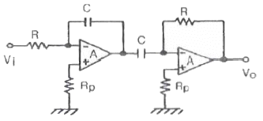
- 0
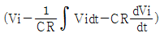
- Vi
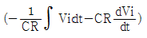
(정답률: 100%)

2. 그림과 같이 T형 플립플롭을 접속하고 첫 번째 플립플롭에 1000[Hz]의 구형파를 입력하면 최종 플립플롭에서 출력단의 주파수 [Hz]는?
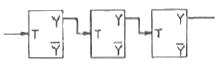
- 1000
- 500
- 250
- 125
(정답률: 55%)
3. 2단 증폭기에서 초단의 잡음지수 F1=5, 이득 A1=5, 2단의 잡음지수 F2=7일 경우 종합잡음지수는?
- 1.2
- 3.2
- 5.2
- 6.2
(정답률: 77%)
4. Wien Bridge 발전기의 정궤환 요소는?
- RL 회로망
- LC 회로망
- 전압분배기(voltage divider)망
- 선행-지연회로망(lead-lag network)
(정답률: 57%)
5. 3초과 코드 0101 0101의 보수는?
- 0010 0010
- 0010 1010
- 1010 1010
- 1010 0010
(정답률: 80%)
6. 어떤 증폭기에서 입력전압이 5[mV]이고 출력전압이 2[V]일 경우 이 증폭기의 전압 증폭도를 [dB]로 환산하면 약 몇 [dB]인가?
- 28
- 40
- 52
- 66
(정답률: 92%)
7. 다음 중 신호 v(t)=cos(20πt+πt2)에서 t=0일 때 순시주파수는[Hz]?
- 5
- 10
- 15
- 20
(정답률: 73%)
8. 베이스접지 방식의 전류증폭률 α와 이미터접지 방식의 전류증폭률 β와의 관계식을 나타내는 식은?
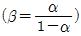
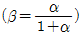
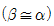
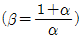
(정답률: 79%)
9. 정류회로에서 직류전압이 200[V]이고 리플(ripple) 전압이 4[V]였다. 리플률(%)은?
- 1[%]
- 2[%]
- 10[%]
- 20[%]
(정답률: 94%)
10. RS 플립플롭회로의 동시 입력에 대한 단점을 개선한 것은?
- JK 플립플롭
- 시프트레지스터
- D 플립플롭
- 어큐뮬레이터
(정답률: 80%)
11. 8진수(2647)8을 16진수로 바꾸면?
- (1323)16
- (88)16
- (5A7)16
- (847)16
(정답률: 89%)
12. 반송파 전력이 80[kW]이고, 변조도 76[%]로 진폭 변조했을 때 피변조파 전력은 약 몇 [kW]인가?
- 56
- 89
- 103
- 132
(정답률: 84%)
13. 브리지 정류기의 출력전압의 실효치가 20[V]일 때, 각 다이오드 양단의 최대 역 전압은 약 몇 [V]인가?
- 20.3[V]
- 28.3[V]
- 38.3[V]
- 48.3[V]
(정답률: 87%)
14. 이상적인 연산증폭기의 특징이 아닌 것은?
- 입력 임피던스 Z1=∞
- 출력 임피던스 Z0=∞
- 대역폭 B=∞
- 전압이득 AV=∞
(정답률: 89%)
15. 다음 중 CMRR(Common Mode Rejection Ratio)에 대한 설명으로 틀린 것은?
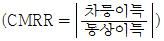
으로 정의된다.- 실제의 차동 증폭기의 성능을 평가할 중요한 파라미터이다.
- CMRR는 작을수록 차동 증폭기의 성능이 좋다.
- 이상적인 차동 증폭기에서는 출력이 차신호에 비례하므로 동위상 이득은 0 이어야 한다.
(정답률: 100%)
16. 반송파의 진폭과 위상을 상호 변환하여 신호를 얻는 변조 방식은?
- ASK
- FSK
- PSK
- QAM
(정답률: 70%)
17. 변조도가 40[%]인 진폭변조 송신기에서 반송파 출력이 400[mW]로 변조되었을 때 이 송신기출력의 평균전력 [mW]은?
- 160
- 382
- 432
- 560
(정답률: 89%)
18. 다음 연산증폭기에서 V1=1[V], V2=3[V], V3=5[V]일 때 출력전압 Vo는?
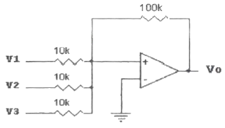
- 99[V]
- -99[V]
- 110[V]
- -110[V]
(정답률: 91%)
19. 다음과 같이 JK 플립플롭을 결선하면 이는 어떤 플립플롭처럼 동작하는가?
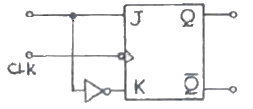
- T
- D
- RS
- M/S-JK
(정답률: 77%)
20. 바크하우젠(Barkhausen)의 발진조건에서 증폭기의 증폭도 A=10이고 궤환회로의 궤환비율을 β라고 할 때 β의 값은?
- 0.1
- 1
- 10
- 100
(정답률: 94%)
2과목: 회로이론 및 제어공학
21. 코일에 e=211sinwt[V]인 교류전압이 가해졌을 때 오실로스코프에 의하여 전류의 최대값이 10A임을 알 수 있었다. 만일 코일의 내부저항이 10Ω임이 알려져 있었다면 코일의 인덕턴스는 약 몇 mH인가? (단, 주파수는 60Hz이다.)
- 39
- 49
- 59
- 69
(정답률: 70%)
22. 그림과 같은 회로에서 C=100㎌의 콘덴서에 QO=3×10-2C의 전하량이 축적되어 있다. t=0인 순간에 스위치 K를 닫은 후 저항 R=5Ω에서 총 전력량(J)은?
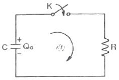
- 4.5×102
- 1.8×104
- 1.8
- 4.5
(정답률: 44%)
23. 그림의 2단자 회로에서 L=100mH, C=10㎌일 때 주파수에 무관한 정저항 회로가 되려면 저항 R의 크기 (Ω)는?
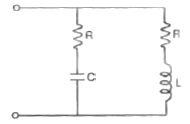
- 100
- 147
- 236
- 10000
(정답률: 42%)
24. 구동함수로 나타낸 임피던스를 부분분수로 전개할 때 K0, K1, K2의 값은?
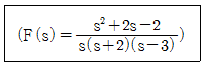
- 0, -2, 3
- -2, 6, 3
- 1/3,-1/5, 13/15
- 2/3, 1/6, -2/5
(정답률: 43%)
25. 대칭 3상 전압이 a상 Va, b상 Vb=a2Va, c상 Vc=aVa일 때 a상을 기준으로 한 대칭분 전압 중 정상분 V1(V)은 어떻게 표시되는가?
- 1/3 Va
- Va
- aVa
- a2Va
(정답률: 60%)
26. 그림과 같은 3상 Y결선 불평형 회로가 있다. 전원은 3상 평형전압 E1, E2, E3이고, 부하는 Y1, Y2, Y3일 때 전원의 중성점과 부하의 중성점간의 전위차를 나타내는 식은?
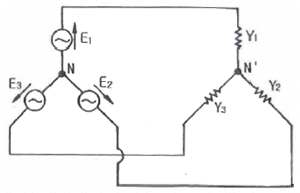
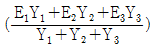
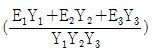
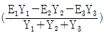
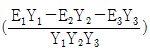
(정답률: 42%)
27. 저항 20Ω, 인덕턴스 0.1H인 직렬회로에 60Hz, 110V의 교류전압이 인가되어 있다. 인덕턴스에 축적되는 자기에너지의 평균값은 약 몇 J인가?
- 0.14
- 0.33
- 0.75
- 1.45
(정답률: 40%)
28. 저항 0.5Ω/km, 인덕턴스가 1μH/km, 정전용량 6㎌/km, 길이 10km인 송전선로에서 무왜형 선로가 되기 위한 컨덕턴스는?
- 1 ℧/km
- 2 ℧/km
- 3 ℧/km
- 4 ℧/km
(정답률: 59%)
29. 비정현파의 전압과 전류가 다음과 같을 때. 이 비정현파의 전력은 몇 W인가?
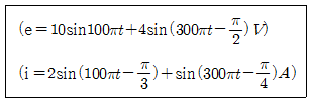
- 24.212
- 12.828
- 8.586
- 6.414
(정답률: 42%)
30. RLC 직렬회로에서 부족제동인 경우 감쇠진동의 고유주파수 f는?
- 공진주파수 보다 크다.
- 공진주파수 보다 작다
- 공진주파수에 관계없이 일정하다.
- 공진주파수와 같다.
(정답률: 47%)
31. 논리식
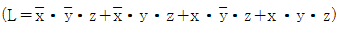
를 간략화 한 식은?- z
- x·z
- y·z
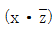
(정답률: 70%)
32. 그림과 같은 회로망은 어떤 보상기로 사용될 수 있는가? (단, 1＜R1C1인 경우로 한다.)
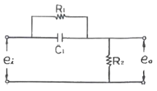
- 지연 보상기
- 진·지상 보상기
- 진상 보상기
- 지상 보상기
(정답률: 알수없음)
33. 전달함수가
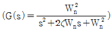
으로 표시되는 2차계에서 Wn=1,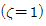
인 경우의 단위 임펄스응답은?- e-t
- te-t
- 1-te-t
- 1-e-t
(정답률: 알수없음)
34.
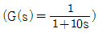
인 1차 지연요소의 G(dB)는? (단, w=0.1[rad/sec]이다.)- 약 3
- 약 -3
- 약 5
- 약 -5
(정답률: 50%)
35. Nyquist 경로에 포위되는 영역에 특성방정식의 근이 존재하지 않으면 제어계의 상태는?
- 안정
- 불안정
- 진동
- 발산
(정답률: 30%)
36. 온도, 유량, 압력 등 공정제어의 제어량으로 하는 제어는?
- 프로세스 제어
- 자동조정
- 서보기구
- 정치제어
(정답률: 59%)
37.
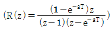
의 역변환은?- 1-e-aT
- 1+e-aT
- te-aT
- teaT
(정답률: 50%)
38. 특성방정식
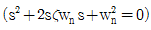
에서 감쇠진동을 하는 제동비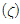
의 값은?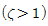
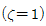
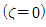
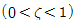
(정답률: 40%)
39. 개루프 전달함수
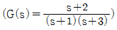
인 부궤한 제어의 특성방정식은?- s2+3s+2=0
- s2+4s+3=0
- s2+4s+6=0
- s2+5s+5=0
(정답률: 37%)
40. 그림과 같은 피드백 회로의 전달함수는?
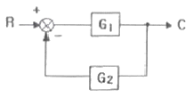
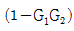
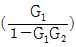
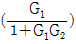
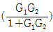
(정답률: 70%)
3과목: 신호기기
41. 건널목경보기 경보 음량은 경보기 1m 전방에서 얼마이어야 하는가?
- 20~80 dB
- 40~100 dB
- 60~130 dB
- 100~180 dB
(정답률: 91%)
42. 전기선로전환기(MJ81형)를 사용하여 선로를 전환할 경우 보통 선로전환기의 전환력 범위는?
- 100~200kg
- 200~400kg
- 400~600kg
- 600~800kg
(정답률: 100%)
43. 유도기에서 저항속도 제어법과 관계가 없는 것은?
- 비례추이
- 농형유도전동기
- 속도조정범위가 적다.
- 속도제어가 간단하고 원활하다.
(정답률: 86%)
44. 전부하에서 동손 85W, 철손 45W인 변압기의 최대 효율은 약 몇 % 전부하에서 나타나는가?
- 72.8
- 82.6
- 84.6
- 87.6
(정답률: 83%)
45. 유도 발전기의 특징이 아닌 것은?(오류 신고가 접수된 문제입니다. 반드시 정답과 해설을 확인하시기 바랍니다.)
- 구조가 간단하고 가격이 싸다.
- 동기화 할 필요가 없다.
- 동기 발전기가 필요 없다.
- 동기 발전기에 비해 단락 전류가 적다.
(정답률: 60%)
46. 철도신호제어회로 중 시소 계전기가 사용되는 회로는?
- 신호 제어 회로
- 선별 계전기 회로
- 조사 계전기 회로
- 보류 및 접근 회로
(정답률: 94%)
47. 직류 전동기의 공급전압V, 전기자전류 I, 자속 ø, 전기자저항 Ra와 속도 N와의 관계는?
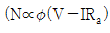
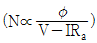
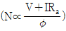
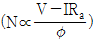
(정답률: 91%)
48. 단상 변압기를 병렬 운전하는 경우 부하 전류의 분담과 관계되는 것은?
- 누설 임피던스에 비례한다.
- 누설 리액턴스에 비례한다.
- 누설 임피던스에 반비례한다.
- 누설 리액턴스에 반비례한다.
(정답률: 82%)
49. 철도건널목 고장감시장치의 고장검지카드 계전기 중 장애복구 후 스스로 복귀하지 못하는 계전기는?
- DNR
- RL1
- CXR
- WB0
(정답률: 79%)
50. 철도건널목 전동차단기에 대한 설명 중 맞는 것은?
- 제어전압은 정격전압의 0.9~1.2배 일 것
- 차단봉의 하강시간은 15초 일 것
- 동작할 때는 적당히 제동할 것
- 슬립전류는 10 A 이하일 것
(정답률: 93%)
51. 전기 선로전환기의 슬립(slip)전류가 약할 때 발생되는 장애 종류 중 옳은 것은?
- 전동기 소손
- 선로전환기 불일치
- 퓨즈 단선
- 기어 소손
(정답률: 86%)
52. 연축전지의 방전상태를 표시하는 것은?
- 양극과 음극과의 색이 거의 같다.
- 양극의 색이 갈색이다.
- 전해액 비중이 1.2이다.
- 극판의 만곡현상이 생긴다.
(정답률: 65%)
53. 직류 전동기의 제동법 중 전동기를 발전기로 동작시켜 회전부가 갖는 기계적 에너지를 전기적 에너지로 변환하여 열로 소비하는 제동방식은?
- 발전제동
- 회생제동
- 저항제동
- 맴돌이 전류제동
(정답률: 84%)
54. 직류기에 보극을 설치하는 목적이 아닌 것은?
- 정류자의 불꽃 방지
- 브러시의 이동 방지
- 정류 기전력의 발생
- 난조의 방지
(정답률: 82%)
55. 유도 전동기를 기동하여 △를 Y로 전환했을 때 토크는 어떻게 되는가?
- √3배로 증가한다.
- 3배로 증가한다.
- 1/3로 감소한다.
- 1/√3로 감소한다.
(정답률: 70%)
56. 직류 전동기의 기동 시 주의 사항을 열거하였다. 틀린 것은?
- 기동 저항을 전기자에 직렬로 삽입한다.
- 계자 조정기의 저항을 0으로 놓고 기동한다.
- 기동함에 따라 속도가 상승함으로써 기동저항을 차차 증가시켜 최대로 한다.
- 속도조정은 기동 완료 후 계자 조정기로 조정한다/
(정답률: 58%)
57. 3상 변압기 2대를 병렬 운전하고자 할 때 병렬 운전이 불가능한 결선 방식은?
- △-Y와 Y-△
- △-Y와 Y-Y
- △-Y와 △-Y
- △-△와 Y-Y
(정답률: 93%)
58. 정격 24 V, 저항 180 Ω의 계전기 낙하 전류(mA)는 얼마 이상인가?
- 29.9
- 39.9
- 49.9
- 59.9
(정답률: 84%)
59. 60Hz, 3상 8극 및 4극의 유도전동기를 차동 종속으로 접속하여 운전할 때의 무부하 속도는 몇 rpm인가?
- 1800
- 1600
- 900
- 600
(정답률: 93%)
60. 전기 선로전환기의 쇄정장치에 해당되지 않는 것은?
- 동작간
- 쇄정간
- 쇄정자
- 마찰클러치
(정답률: 100%)
4과목: 신호공학
61. 신호용 정류기에서 정류회로의 무부하 전압이 28V 이고, 전부하 전압이 24V 일 때 전압변동률은 약 몇 % 인가?
- 12
- 14
- 17
- 19
(정답률: 100%)
62. 진로선별회로 상에서 전철선별 계전기의 직접적인 역할로 적절한 것은?
- 선로전환기의 전환방향 결정
- 신호제어계전기 동작
- 신호현시 결정
- 전철표시계전기 동작
(정답률: 100%)
63. 고속철도에서 풍속·풍향검지장치에 대한 설명으로 거리가 먼 것은?
- 풍속검지장치 검지범위는 0~60m/s±5%로 한다.
- 풍속·풍향검지장치용 철탑 및 철주의 높이는 5m로 한다.
- 풍향검지장치는 0~360° 까지 검지하여야 한다.
- 풍속계에는 결빙을 방지하기 위해 자동온도검지에 의해 작동되는 히터를 설치해야 한다.
(정답률: 62%)
64. 무정전 전원장치의 정전시 출력전압 변동범위는 정격전압의 몇 [%] 이내로 유지하는가?
- 7%
- 10%
- 15%
- 20%
(정답률: 67%)
65. 다음 중 폐색 준용법에 해당하지 않는 것은?
- 격시법
- 지도 격시법
- 전령법
- 지도식
(정답률: 75%)
66. 역조작판에 설치된 고장 표시 장치가 정상 상태일 때 점등 상태는?
- 소등
- 적색
- 녹색
- 백색
(정답률: 75%)
67. 신호전구 설비수가 100개일 때 연간 장애수가 50건이라면 고장률은 얼마인가?
- 57×10-6
- 137×10-6
- 0.5
- 0.2
(정답률: 92%)
68. 궤도회로의 단락감도는 그 궤도회로를 통과하는 열차에 대하여 임피던스 본드 및 AF궤도회로 구간은 맑은 날 몇 [Ω] 이상을 확보하여야 하는가?
- 0.06[Ω]
- 0.16[Ω]
- 0.01[Ω]
- 0.1[Ω]
(정답률: 88%)
69. 경부고속철도 보수자 선로횡단장치에서 신호등 제어를 위한 보수자 선로횡단 소요시간 적용기준은?
- 15초
- 20초
- 25초
- 30초
(정답률: 75%)
70. 건널목 지장물검지장치의 설명으로 옳은 것은?
- 발광기에서 수광기 거리는 50m 이하로 한다.
- 발광기의 빔 확산 각도는 5° 이하로 한다.
- 건널목 경계지점 외방 400m 위치에서 건널목 지장경고등의 확인이 가능하여야 한다.
- 수광기는 일출시에 10° 이내에 직사광선이 들어가지 않도록 한다.
(정답률: 79%)
71. 고속철도 지장물검지장치에 대한 설명으로 거리가 먼 것은?
- 낙석검지용 보조 접속함(SDC)은 검지망의 시점 기주에 설치한다.
- 검지선 간의 간격은 150~300[mm]로 한다.
- 보호해제버튼(CAPT)은 지장물검지장치 그룹의 시단부에 설치한다.
- 검지선이 단락되면 계전기가 무여자되어 이상정보가 제공되어야 한다.
(정답률: 85%)
72. 전기 선로 전환기의 슬립(Slip) 전류가 약할 때 발생되는 장애는?
- 퓨즈단선
- 선로 전환기 불일치
- 전동기의 소손
- 기어(gear) 소손
(정답률: 79%)
73. 도착선에서 궤도회로를 분할하려 한다. 출발신호기와 장내신호기 사이에 선로전환기가 없는 경우 궤도회로는 몇 개로 나뉘어져야 하는가?
- 분할하지 않는다.
- 2개로 균등분할 한다.
- 3개로 균등분할 한다.
- 4개로 균등분할 한다.
(정답률: 67%)
74. 역간 열차 평균 운전 시분이 7분이고 폐색 취급 시분이 5분일 경우 선로 이용률이 0.75인 단선 구간의 선로용량은?
- 60회
- 75회
- 90회
- 120회
(정답률: 93%)
75. 5현시 자동구간에서 정거장 주본선에 정지하는 경우 장내신호기의 현시상태는?
- YG
- Y
- YY
- 제한
(정답률: 82%)
76. 경부고속철도구간 전자연동장치에서 1개의 선로전환기모듈(PM)이 최대로 제어할 수 있는 전기 선로전환기 수는?
- 4대
- 7대
- 10대
- 12대
(정답률: 85%)
77. 철도신호 정위 선정중 무현시(소등) 정위식 신호기는?
- 중계신호기
- 엄호신호기
- 입환신호기
- 유도신호기
(정답률: 93%)
78. 상치 신호기를 사용목적에 따라 주신호기, 종속신호기, 신호 부속기로 분류할 때 다음 중 주신호기에 해당되는 것은?
- 중계신호기
- 통과신호기
- 원방신호기
- 엄호신호기
(정답률: 84%)
79. 다음 연동장치에서 전원의 극성에 따라 계전기의 여자방향이 다른 계전기를 사용하는 회로는?
- 진로선별회로
- 진로조사회로
- 전철제어회로
- 진로쇄정회로
(정답률: 71%)
80. 역 사이에 설치된 3위식 자동폐색구간에서 항상 진행 신호로 운행하는 경우의 최소운전시격(TR)은? (단, B:폐색구간길이[m], L:열차길이[m], C:신호현시 확인에 요하는 최소거리[m], t:선행열차가 1의 신호기를 통과할 때부터 3의 신호기가 진행신호를 현시할 때까지의 시간[sec], V:열차속도[km/h])
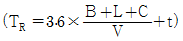
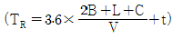
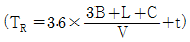
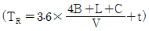
(정답률: 79%)
우선, 입력신호가 0V인 경우를 생각해보자. 이때, 적분회로는 입력신호가 없으므로 출력은 0V가 된다. 미분회로는 입력신호가 없으므로 출력도 0V가 된다. 따라서, 전체 회로의 출력은 0V가 된다.
다음으로, 입력신호가 Vi인 경우를 생각해보자. 적분회로는 입력신호를 적분하여 출력하므로, 입력신호 Vi가 시간에 따라 적분되어 출력된다. 이때, 적분회로의 출력은 Vi를 시간에 따라 적분한 값인 Vi*t가 된다.
미분회로는 입력신호를 미분하여 출력하므로, 입력신호 Vi가 시간에 따라 미분되어 출력된다. 이때, 미분회로의 출력은 Vi를 시간에 따라 미분한 값인 Vi/RC가 된다.
따라서, 전체 회로의 출력은 적분회로와 미분회로의 출력을 합한 값인 Vi*t + Vi/RC가 된다.
따라서, 정답은 "Vi"이다.